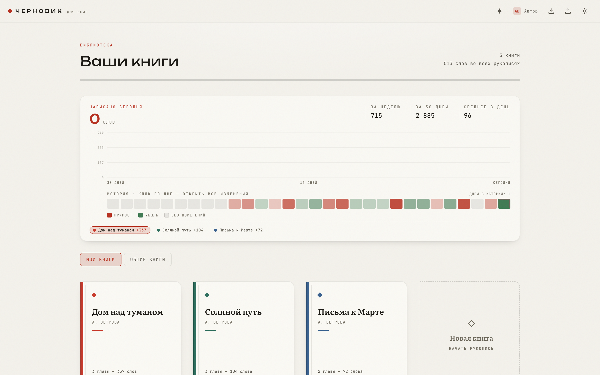
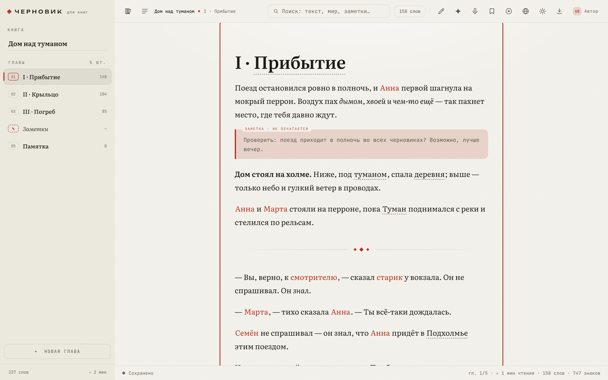
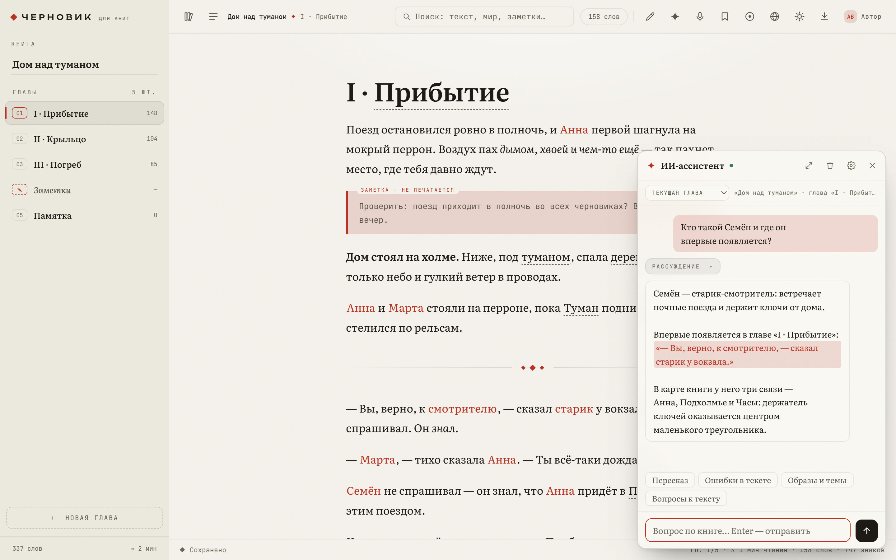
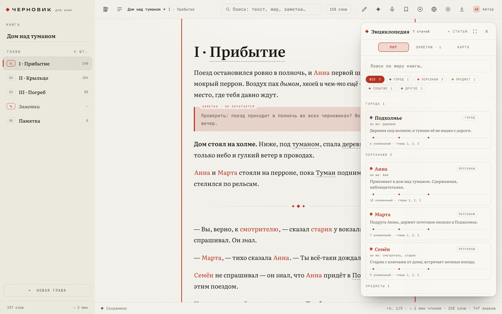
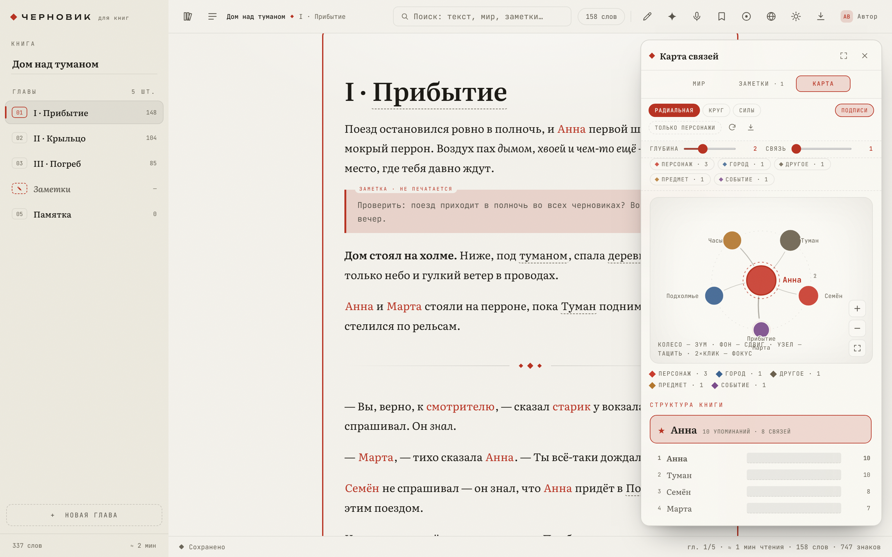
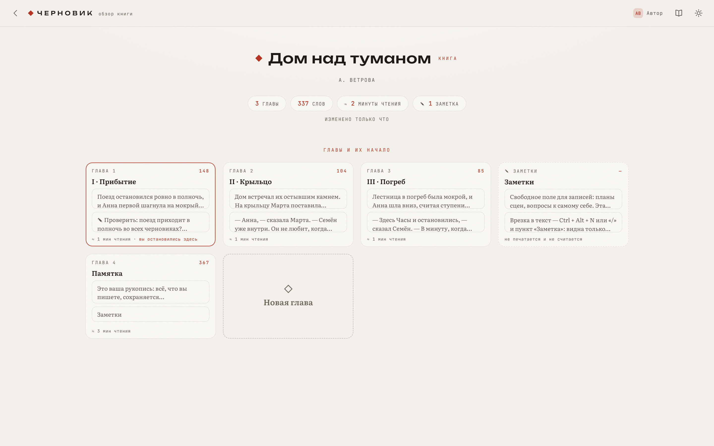

Библиотека
01
Полка книг
Обложки-цвета, статистика недели и месяца, среднее в день, график письма и полоса дней.
Клик по дню — прирост и убыль слов по каждой главе.
01Черновик
Библиотека, автосохранение, энциклопедия персонажей, карта связей, заметки, история версий и ИИ-ассистент. Всё в браузере — от первой строки до готовой рукописи.
Скриншот

02Что внутри
Каждая часть «Черновика» держится на одном принципе: то, что вы пишете, сохраняется само, а то, что вы знаете о мире книги, всегда под рукой.
Библиотека
01
Обложки-цвета, статистика недели и месяца, среднее в день, график письма и полоса дней.
Клик по дню — прирост и убыль слов по каждой главе.
Редактор
02
Меню блоков по «/», заголовки по #, разделитель по ---, хоткеи, ползунок ширины текста.
Автосейв на лету, режим фокуса (Esc — выход), метки и закладки в тексте.
Мир книги
03
Персонажи, города, страны, организации, предметы и события — с типами, цветами и описаниями.
«Другие имена» (прозвища, титулы) делают поиск упоминаний точнее.
Карта связей
04
Со-встречаемость имён в тексте превращается в граф: главный герой в центре, вокруг — связи.
Радиальная, круг и силы; глубина и порог связи; фокус по двойному клику, узлы тащатся.
Заметки
05
Врезка прямо в тексте (Ctrl+Alt+N) — видна только вам и никогда не попадает в печать.
Панель собирает все врезки, отдельная глава — для свободных записей.
История
06
30 дней истории: по каждой книге и главе видно, сколько слов прибыло и убыло.
Откат одной кнопкой — рукопись возвращается на любой из последних дней.
Голос
07
Голосовой ввод Ctrl+Alt+R — диктуйте, не отрываясь от сюжета.
На телефоне — тап-зоны, шрифт и тема, оглавление и прогресс чтения.
Синхронизация
08
Профили с опциональным паролем; на сервере — PHP API и SQLite/MySQL.
Резервные копии, книга по share-ссылке, режим чтения для чужих рукописей.
Экспорт
09
Один клик — и рукопись уходит в файл ровно в том виде, в каком её увидит читатель.
Заметки и служебные главы в экспорт и печать не попадают.
03Экраны
01

02

03

04

04ИИ-ассистент
Чат подхватывает контекст сам: текущая глава, соседние, вся книга или только выделение — охват переключается в шапке панели.
Где ассистент находит ошибку, он цитирует место — по цитате вы переходите прямо в текст. А ещё — исправление и улучшение выделенного, создание книг и глав по словесной команде и полностраничный чат с историей диалогов.
Путь запроса
Браузер → PHP-релей /api/ai.php → локальный прокси на VPS 127.0.0.1:8080 → DeepSeek. Ответ приходит SSE-стримом, без буферизации.
# браузер → релей → прокси → DeepSeek
curl -N https://rov.smartliba.ru/api/ai.php?action=chat \
-H 'Content-Type: application/json' \
-d '{"model":"deepseek-chat","messages":[…],"stream":true}'Разработчику — свой прокси: база и ключ в настройках панели, тот же формат OpenAI-совместимого стрима. Ответы лежат в localStorage, диалоги переживают перезагрузку.
05Как устроено
Один HTML-файл, классические скрипты строго по номерам и серверная часть, которую можно прочитать за вечер.
Клиент
01
Ядро, тезаурус, снапшоты, граф, вики, редактор, аккаунты, синхронизация, читалка, ИИ — каждый файл со своей шапкой и списком зависимостей.
Подключаются строго по номеру, строгий режим в каждом.
Стили
02
Каскад по слоям: база, библиотека, рабочая область, редактор, модалки, граф, вики, доступ, читалка, ассистент.
Порядок правок сохранён байт-в-байт — линт и визуальная регрессия.
Сервер
03
bootstrap / book / read / state / auth: same-origin проверяется по Origin, лимиты заданы в байтах, книга пишется атомарным UPDATE.
Гонка «последний победил» решена проверкой rowCount → stale.
Хранилище
04
Книги, снапшоты и статистика живут на сервере; локально — localStorage этого браузера.
MEDIUMTEXT-лимит учтён, prefs и статистика валидируются на входе.
Транспорт
05
Rate-limit 20 р/мин на ИИ-релей, fastcgi_read_timeout 300s и отключённое буферизация — нужна для SSE-стрима.
HTML — no-cache, статика — на сутки с версией в index.html.
Качество
06
Аудит 07.10.2026: XSS, троттлинг логина, подделка Origin: null, лимиты read_json — исправлено и сверено с кодом.
18 наборов, 434 проверки — все зелёные; php -l и node --check чистые.
Скриншот

06Доступ
Страница работает прямо в браузере: рукописи локально, синхронизация — на вашем сервере. Или возьмите исходники и разверните свой «Черновик».
git pull && sudo bash setup-server.sh # ключ релея + location /api/ai.php
sudo bash nginx-ai-patch.sh # разово: бэкап, nginx -t, перезапуск
# локально без сервера: откройте src/index.htmlРукописи без сервера хранятся в localStorage браузера — ничего настраивать не нужно